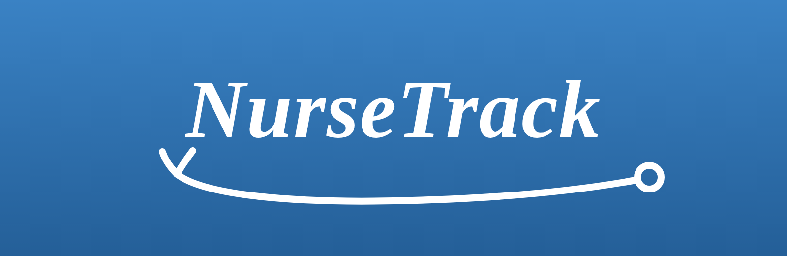

These Terms are a legal agreement between you and Christopher Kelly, doing business as NurseTrack ("NurseTrack"). By creating an account or using NurseTrack, you agree to them.
NurseTrack is a tool for licensed healthcare professionals (and their authorized staff) to document care, track mileage, and plan visits. You must be at least 18, legally able to enter this agreement, and responsible for maintaining any professional licenses your work requires.
Keep your login credentials confidential; you're responsible for activity under your account. Tell us promptly at support@nursetrack.app if you suspect unauthorized access.
You agree to use NurseTrack lawfully and in line with your professional and privacy obligations. You are responsible for the accuracy of the information you enter and for using PHI on a "minimum necessary" basis. You agree not to:
You keep ownership of the data you enter. You grant us the limited rights needed to store, process, and display it to operate the service for you (including sending minimized data to our AI provider to generate notes at your request). We don't claim ownership of your patients' records.
NurseTrack is provided "as is," without warranties of any kind to the fullest extent permitted by law. We don't warrant that the service will be uninterrupted, error-free, or that AI output will be accurate or complete.
To the maximum extent permitted by law, NurseTrack is not liable for indirect, incidental, or consequential damages, and our total liability for any claim is limited to the amount you paid us in the 12 months before the claim.
You may stop using NurseTrack and delete your account at any time. We may suspend or terminate access if you violate these Terms or to protect the service or its users.
These Terms are governed by the laws of the State of California, without regard to conflict-of-law rules. We may update these Terms; material changes will be posted here with a new date and, where appropriate, notice in the app. Continued use after changes means you accept them. Contact: support@nursetrack.app.
This section applies to patients who receive SMS appointment reminders sent through NurseTrack by their home-health nurse or agency.
NurseTrack ("we," "us") is a scheduling and documentation platform operated by Christopher Kelly, doing business as NurseTrack, and used by licensed home-health nurses and agencies. On their behalf, the SMS service sends appointment reminders to patients for scheduled home nursing visits. Messages contain only the patient's first name and the approximate arrival time window — no diagnoses, medications, or other Protected Health Information (PHI).
The service is available to active patients (or the parent/legal guardian of a minor patient) who have a U.S. mobile number capable of receiving SMS and who have provided consent at their intake visit. You must be the authorized user of the mobile number you provide. By providing your mobile phone number and consenting to receive SMS reminders, you agree to these terms.
Consent is obtained verbally during your intake visit and documented in your signed intake paperwork. SMS consent is not a condition of receiving nursing care; you may decline SMS reminders at any time without affecting the nursing services provided to you.
Message frequency depends on your visit schedule — approximately 2 messages on a typical scheduled-visit day, up to approximately 10 messages per week for active patients. Message and data rates may apply depending on your carrier and plan; you are responsible for any fees your carrier imposes.
Stop receiving SMS reminders at any time by replying STOP, STOPALL, UNSUBSCRIBE, CANCEL, END, or QUIT to any message. You will receive a single confirmation message and no further SMS reminders unless you opt back in. Opting out does not cancel scheduled nursing visits — your nurse will continue to arrive as scheduled. Reply HELP to any message to receive our contact information (Section F).
You are responsible for providing and maintaining an accurate mobile phone number. If your number changes, notify us promptly so reminders continue to reach you and do not reach an unintended recipient. We are not liable for messages sent to a number that you provided but no longer own or control.
SMS delivery is not guaranteed — it depends on your carrier, device, and network conditions outside our control. Do not rely on SMS reminders as the sole means of tracking your visits.
To the fullest extent permitted by law, NurseTrack, its operator, and the nurses and agencies who send reminders through it are not liable for indirect, incidental, consequential, or punitive damages arising out of or related to the SMS service, including missed, delayed, or undelivered messages, or messages delivered to an incorrect number that you provided. The SMS service is provided on an "as is" and "as available" basis. Nothing in these terms limits liability that cannot be limited under applicable law.
These SMS terms are governed by the laws of the State of California; disputes will be resolved in the state or federal courts located in Riverside County, California.